Matthew 7:15 NIV - "Watch out for false prophets. They come
to you in sheep's clothing, but inwardly they are ferocious
wolves
1 John 4:1 NIV - Dear friends, do not believe every spirit, but
test the spirits to see whether they are from God, because many
false prophets have gone out into the world.
Blessings brethren, one of the greatest tricks of a predator
is to appear very harmless, good, and “safe.”
Think for a moment; how successful could a predator be if they
just SHOWED you their true colors and not act like wolves in
sheep clothing/trickery?
Case-in-point our subjects of today’s sermon, Sola
“Agbari” Olowokere, has done a masterful job of
convincing some people he’s a “man of God”
who hears from God, lives a holy/righteous/upstanding life.
We’ll undress just a little of the sheep’s
clothing today.
Straight to the action, time is limited. We have come across a
series/catalogue of Agbari’s messages (text, WhatApp)
and some voice calls ranging from about 2008 to 2022. There
are over 90,000 messages alone to get through, so on
today’s sermon we’ll go over just a few we found
interesting around the 2010/11/12 time period. Don’t
worry, once we have time to go through everything we’ll
share more.
PROOF
Is usually in the pudding. How else would you know these are
true and legit? We’ll share some random specific
messages from a few people. Enough to know “Oh yeah,
these are very legit.”
* You can zoom in on the screenshots *
1. Random Selection
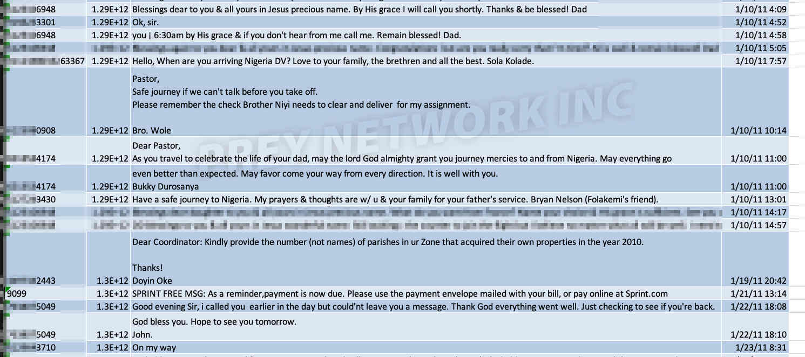
2. Sewande Cadmus
"Hello Dad thank you for the grift yesterday I really
appreciate it. & also sorry about not accepting it @
first. Also bellow is the info. You asked me to text you.
Name: Sewande Anuoluwapo Cadmus. DOB: December 21 XXXX
SSN: 432-XX-XXXX. Thanks dad!"
Don’t worry Sese, we won’t get into all your extra
curriculars just yet.
3. Ayo Adeniyi
4. Moni Os
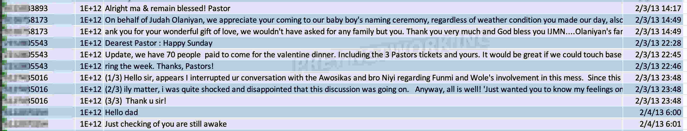
"(1/3) Hello sir, appears I interrupted ur conversation
with the Awosikas and bro Niyi regarding Funmi and Wole's
involvement in this mess. Since this is a fam (2/3) ily
matter, i was quite shocked and disappointed that this
discussion was going on. Anyway, all is well! 'Just wanted
you to know my feelings on this. (3/3) Thank u sir!"
Now notice the talks going on with Niyi and the Awosikas*
There aren’t many issues that go past the ears of Niyi and
consult of the Awosika’s. The difference is that the
Awosika’s act like they don’t know (liability sake)
and Niyi acts like he too-knows, Mr “I have all the
exclusives and know all your drama.”
5. December 2012 – Treasure
The time brought about a new “bundle of joy” that
had an influx of calls (mostly to voicemail) and messages.
Here are some:
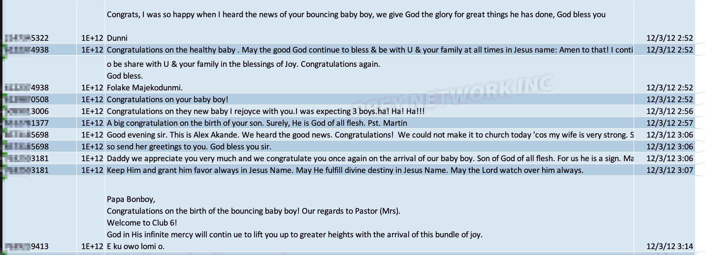
See if you can notice anyone : )
6. Seun D-Guvnor
A prophet seeing things from 2007!
7. Akinjide Falaki
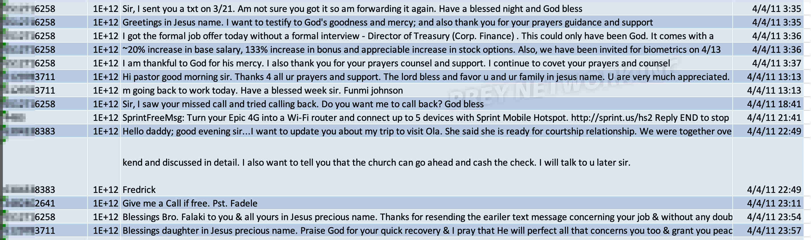
No, we’re not going to go over the hesitation/concern your
wife was having with taking on a new role at Best Buy at the
time, or all the conversations on your work phone or your condo
you made available for “him” countless times for
practically no cost. The way he helps you handle your wife
whenever she catches you lol One of the BIG TIME (financial)
supporters of “man of god.” Coveting prayers &
influence : ) May your marital home not turn into what your
pastors is now.
8. William’etta K
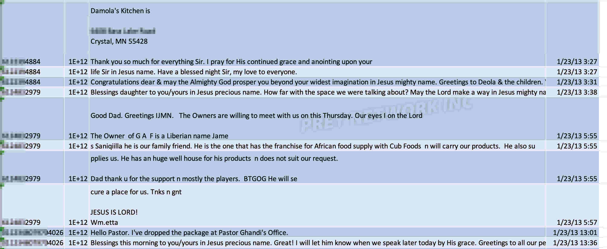
REVELATION
Now the moment of truth. There are literarily over 90,000
messages, not including picture messages/WhatsApp
Messages/WhatsApp deleted messages. We have spent a month+
trying to comb through; and it’s a lot : ) We’re
not even 10% through this first set. One of the quick things
we did with the first batch of text messages is to search
“delete.” Why? Because we know a bit of the
pastors behavior patterns and how he tell all his (sexual)
prey to “make sure you delete these o” over and
over. So we searched the messages and deleted archives : ) Let
look at these together, “Media… Open…
“
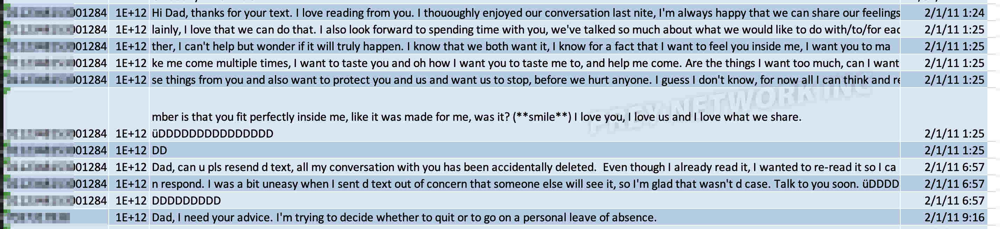
"Hi Dad, thanks for your text. I love reading from
you. I thououghly enjoyed our conversation last nite,
I'm always happy that we can share our feelings plainly,
I love that we can do that. I also look forward to spending
time with you, we've talked so much about what we would
like to do with/to/for each other, I can't help but
wonder if it will truly happen. I know that we both want it,
I know for a fact that I want to feel you inside me, I want
you to make me come multiple times, I want to taste you and
oh how I want you to taste me to, and help me come. Are the
things I want too much, can I want all these things from you
and also want to protect you and us and want us to stop,
before we hurt anyone. I guess I don't know, for now all
I can think and remember is that you fit perfectly inside
me, like it was made for me, was it? (**smile**) I love you,
I love us and I love what we share.
üDDDDDDDDDDDDDDDDD"
Well good-God-almighty! That’s refreshing : ) How many
of you can honestly say you knew the man of god was this
freaky?! Even his wife doesn’t. As we read through
these, coming from a number in Nigeria (we found out is the
pastors Nigerian number), which will make a lot of sense
later, we wonder who this highly sexually driven Jezebel is!
So we keep reading…
Man of god is very understanding and patient when his kitty
isn’t available to him at the moment : ) Awwwwww
Then we start to slip up, which happens A LOT with most of
y'all:
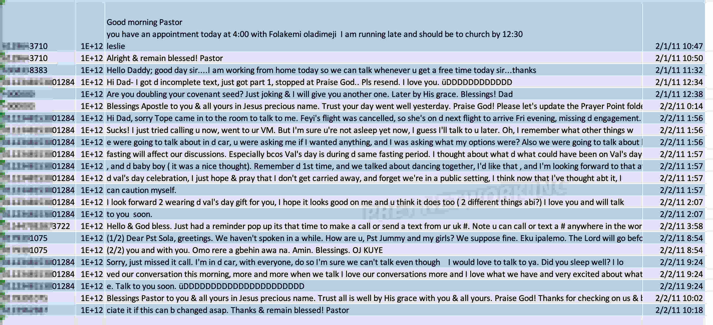
"Hi Dad- I got d incomplete text, just got part 1,
stopped at Praise God.. Pls resend. I love you.
üDDDDDDDDDDDD"
"Hi Dad, sorry Tope came in to the room to talk to me.
Feyi's flight was cancelled, so she's on d next
flight to arrive Fri evening, missing d engagement."
"Sucks! I just tried calling u now, went to ur VM. But
I'm sure u're not asleep yet now, I guess I'll
talk to u later. Oh, I remember what other things we were
going to talk about in d car, u were asking me if I wanted
anything, and I was asking what my options were? Also we
were going to talk about how d fasting will affect our
discussions. Especially bcos Val's day is during d same
fasting period. I thought about what d what could have been
on Val's day, and d baby boy ( it was a nice thought).
Remember d 1st time, and we talked about dancing together,
I'd like that , and I'm looking forward to that at d
val's day celebration, I just hope & pray that I
don't get carried away, and forget we're in a public
setting, I think now that I've thought abt it, I can
caution myself."
Now try not to jump to any conclusions, those names could
be related to a multitude of people around the world,
especially in Nigerian setting. Fear not, there will be many
other slip ups ahead. "I look forward 2 wearing d val's day gift for
you, I hope it looks good on me and u think it does too ( 2
different things abi?) I love you and will talk to you
soon."
Oh yeah, pastor loooooves buying personal gifts for his
"little wives." They’re public
“prizes” that only both of them will know what it
means; they think.
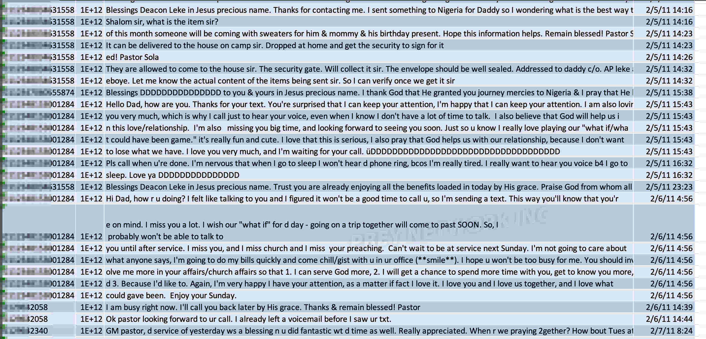
Lot to unpack here, you can read if you have time, but just a
slight touch on some: Hello Deacon AP Leke, now pastor Leke :
)
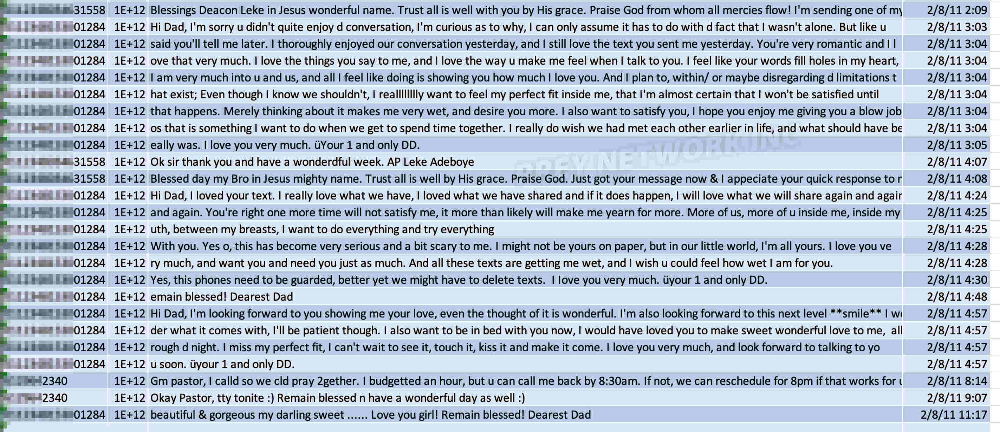
No comment smh. We need a quick 30min break because
we’re all wet and hard reading these. Good God almighty!
In yawls “little world” you may need a psych eval
: )
You all are probably getting a bit bored with these and
wanting to know more about WHO the O&O (one and only)
DDDDDDDD is? Well one of the larger slip ups occurred when she
ran out of credit in Nigeria:
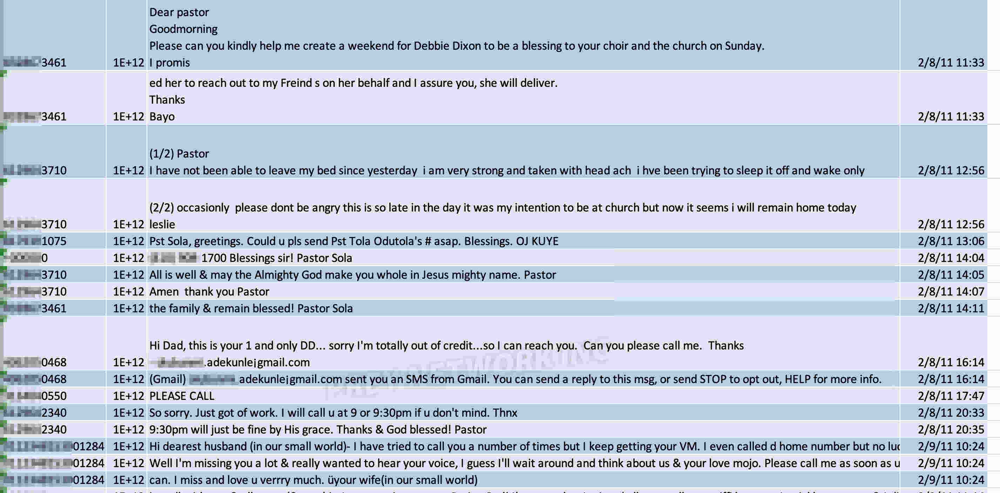
No comment smh. We need a quick 30min break because
we’re all wet and hard reading these. Good God almighty!
In yawls “little world” you may need a psych eval
: )
You all are probably getting a bit bored with these and
wanting to know more about WHO the O&O (one and only)
DDDDDDDD is? Well one of the larger slip ups occurred when she
ran out of credit in Nigeria:
Not all deleted messages stay deleted; remember that. We have
your Google, alternate, work etc phone numbers and we’ve
been reading and listening. If you would like to SEEEEEE more
*** smile *** just try us.
Even on your “primary” line for everyone (ending
in 5833) you both lose yourselves “lightly” lol
We know he comes to see you on base, at work, everywhere he
can get that little pee-pee in for two minutes and brings you
food, but only whenever you’re not worried about making
weight. He’s always nervous about if anyone can spot
him. We know, it’s not only with you he’s that
nervous about being caught. Meanwhile, his wife is at home
trying to heal and nurse the newborn.
So how was she messaging from his Nigerian number you ask? She
went on a trip with her family, where names were dropped when
Tope came in the room/Feyi missed her flight etc as to why
they couldn’t “hear each others voice” lol
But while visiting Nigeria he gave her his local phone/sim
card to use with their code name O&O DD. That is until
credit finished in the middle of a wet situation : )
Side Note
"Feyi. I have told pastor bcos I needed someone to help
figure out what type of hold a man can have on you to make
you think it is okay to lie to ur family." Very
interesting take on Feyi’s issues she was having with
me. Don’t worry Feyi, we got you on the grand
“SMFH.”
While we were able to recover these series of messages totally
we have in some parts:
"Your lips are so beautiful & soft that I want to
glue them to mine as a software of your love to my love
heart drive."
What in the actual F*CK man of god?!
O&O DD is talking about sucking the skin off your d*ck,
“perfect fit” inside everywhere, being wet and
daydreaming and all you have is… “I want to glue
them to mine as a software of your love to my love heart
drive”?!?! I guess it took a while for it to make sense
to us.
Some are of the opinion “boys will be boys” /
“Men are just dogs” etc, although your whole
marketing is bible man of God, some are quick to excuse the
contradicting lifestyle. What now makes sense to us in reading
some of these text so far; you have no game! No woman in her
right logical mind is falling for any software line of your
shortcomings (pun intended), so you have to take advantage of
people who SEE YOU as “man of God,” who knows
scripture, hears from God. Then they start to SEE YOU as a
god. Interesting way to take advantage of people.
NIYI ADEKUNLE
We know… We know.
You’ve been “loyal” to him most of your adult
life, but what did you think? If you bothered to think. All
those days you leave her ALONE at church with him, you come back
to those warm (and sometimes salty) kisses - what did you THINK
was happening? Oh you thought the demon in him turned off for
you?
Ever since you came off the ship you’ve been at his mercy,
before you even uprooted yourself to Minnesota for him.
Your entire livelihood depends on him.
You’ve never shown you’re able to stand on your own
two feet. So why wouldn’t he be banging your wife as he
feels? Why shouldn’t he be entitled to her? Or did you
think he got you that Abuja contract because you’re loyal
or handsome? You’re living in upper middle class
neighborhood and driving Tesla ALL funded by him and you think
he wont drive your wife? L-O-L We can’t wait to see how
you respond, most likely act like you don’t see it,
that’s the coward thing to do. BUT YOU KNOW. And pretty
soon, your seeds will too. There’s no way to remove this
like you did those written notes on cars back then or keep other
members trying to confront him from seeing him, Mr Bodyguard.
And no, Niyi’s wife isn’t the only one, not even
close. But once your minds are able to digest this one first,
we’ll SHOW YOU more. More messages, audio, pictures
– whatever you’d like : )
THE SHEEP - PAY ATTENTION TO THESE:
Once someone with a little charisma quotes scripture from
memory and say “Jesus” over and over almost all of
your common sense gets deactivated. Your spirit of discernment
just turns off, when the Bible is clear that you need to test
all spirits (1 John 4:1), why do you THINK that is? Why did it
take this website for you to THINK?
1. Your “MOG” (man of god) avoids all public
events, and those he’s compelled to “show
face” at, he rushes out. WHY do you think that is? Well,
his victims list is growing out of control and some of these
women/people are getting very unpredictable. So he thinks if
he avoids public events he can avoid confrontation.
2. “But he prayed with/for me and God answered,
he’s of God!” You think God answered your prayers
because of him? No, seriously? Bible is very clear; Romans
9:16: So then it is not of him that willeth, nor of him that
runneth, but of God that sheweth mercy. God will BE God
regardless of man. God “answered” your prayers in
spite of, not because of Olowokere.
If he TRULY were “God sent,” hears from God, man
of God etc etc… Why is it that when he tells you
“God said we’ll be out of Hebron by
2019/2020” it didn’t happen? Or God forgot what he
said? Or better yet “God said nobody will die this
year”? Not only did people die, his own ministers and
leaders did as well. May their souls rest in peace. What about
the Minister who died December 9th and he, along with
Awosika’s and Kotila, hid it from you all till January
the following year? Do you THINK your confidence for all those
end of the year “sacrificial giving” would have
been the same had you known one of his own ministers went on
to be with the Lord? Don’t worry Dr K & Kotila, we
won’t go into those details yet. Let me guess, you
haven’t noticed your MOG is not giving you any specifics
on what “God said” anymore? It’s just your
month of Rain, uplifting, testimony, favor, reward etc.
etc.
3. How many people have you seen leave that church (but
won’t say why TO YOU) and God continues to bless them,
be with them, lift them, keep them?
4. How many of you can ask him a question about an allegation
you heard? If you don’t get spun around with meetings by
Niyi lol it’s “I’ll explain later / Ehnn
Hmmm It would be hard for you to understand / Let’s talk
about it when I have time.“ and he’ll never have
the time lol Deflecting is an art form he thinks he has
perfected.
5. December 9th 2023 - 12 Days Fasting Program.
from 48:48 for about 3
mins - He's REPEATING what he told you a few months ago -
it's not a "church" when there's no service
so that when you find out he's f*cking people's wives
(plural) in the church he'll remind you "I already
told you it's not a church/house of God when there's
no service; it's 'just a space.'" MEANWHILE;
He's twisting all your emotions to go get $25,000-$50,000
personal loans and bring it to him for "just a
space" that will remain in he and his wife's name
alone.
6. Common Sense Isn’t Very Common.
You have a current space you bought for about $750,000 and
recently was evaluated over $2Million. Now, common sense would
say if you want another building (while current one
isn’t even being used to half capacity) that you should
sell this one and use the profits to acquire another,
right?
Well, with the help of one of his small wives, the current
building operates as a food shelf, it has beds for homeless
people and stuff. All things that the State of Minnesota will
compensate you for having and doing. It’s a
“passive” cash flow. So, why would he sell that
and go start over with another building when he can just tell
you mu-mu’s “God said…” and
you’ll bring money for him to buy another building?
Why do you THINK Jumoke was on stage talking about what she
loves about this closing is that they get to keep both
properties? Whose names do you think are on the properties?
Yours? Lol
As some of you have started noticing from the outright cash
grab; you’re being used for their personal gain. Why
else do you think your MOG got into it with James Fadele and
got kicked out of Redeem?
Oh sorry, shouldn’t get into that yet.
BOARD OF TRUSTEES
Here is a board that has NO IDEA what the pastor does with all
the funds, just a bunch of yes men. Who, anywhere, can say
factually where all the money collected goes? We want you to
speak up before we point out all the reckless spendings of
your man of god, the Marriot Ambassador Elite, the (jaw
dropping) lavish gifts. Ghandi is coaching your MOG on how to
“behave” in his circles but he gravely
underestimates the desperation of greed. Don’t worry
Ghandi, we’re not going to give Access to your
“personal” behaviors yet.
For those of you curious to learn more; Search online for
“Marriot Ambassador Elite” and look up the
requirements (the monetary requirement change yearly) and you
can call their customer service to enquire about the status.
Your “man of god,” who doesn’t pastor a
church of 300 consistent members, spends more time in hotel
rooms than in his own bed with his wife. Marriot Ambassador
Elite status is an extremely elite group of big spenders with
the hotel chain. The pastor has been Ambassador Elite a few
years now. And no, it is not transferable or group use-able.
Meaning when he tries to tell you “We use it for church
guests” or “other pastors use it” – He
is lying. CALL the customer service and ask, it isn’t
possible. ALL hotel stays must be by him.
Or the cars he’s buying his little wives, amongst other
gifts?! Who on the board approves these reckless expenses?!?! Man of god does not have a job!
THE “LOYAL” SUPPORTERS
There are some of you still hanging through the years, a lot
of you in silence these days. We know he has given you money,
paid your rent, bought cake/rice for your birthday, bought
furniture for your home, paid the down payment for your
business, called you to pray with you during a difficult time,
even lied to RCCG on your behalf so you could become a
Deacon/Deaconess/Pastor, did one act of kindness or another
etc – We KNOW his game plan. He used SOME of the money
he has been taking to do these things so that when a day like
today comes his first response will be “How can you have
something to say, you that ‘I’ helped
with…” This whole time we were thinking he was a
man of God and GOD was using him to be a blessing to people,
we thought he was doing the Matthew 6:3-4 and not letting even
your left hand know what your right is doing? Lol Our question
to you “loyal” supporters/beneficiaries are: Has
the act he helped you with AS A PASTOR justify you being quiet
about every other thing you hear about him? It makes it all
“Ok” what he is doing to the lives of others? What
if these things you act like you don’t hear; are done to
your children? Your nieces and nephews?
Your conscience is that cheap?
WATCH YOUR WIVES
Some of you men are, understandably, gullible to this. So,
we’ll give you some little hints.
1. Use of work/alternate phone
The pastor will rarely ever talk dirty/nasty with your wife on
her main line (unless a desperate event/moment), because
“What if you or anyone just open the phone and
see?” He’s not stupid. He will use and/or even
offer alternate phone line(s) and their work phones to do all
the talks. And he constantly tells them to make sure
they’re deleting everything.
2. Dad/Daughter or an acronym. When they’re in their
talks, he won’t mention them by name, just acronym.
All that “Dad / Daughter” you see in the messages,
well, if you haven’t seen above and you’re still
fooled by that; your situation only remains for God to
intervein.
3. Personal gifts she stumbles to explain where they came
from.
The pastor loves loves loves loves loves to buy them gifts.
Pay attention to all subtle things she can’t explain
where they came from directly like earrings, necklace, watch,
perfume, clothes etc. He has a “what can I buy you that
your husband wont notice” thing.
4. Locations
He meets them at work, even fly to different cities/countries
“to preach” and meet up in hotels; and everywhere
else. Trust us, any 10–30-minute break she can take at
work or away from home, they’ve planned it out. He meets
them at malls, meets them at hotels, meets them in parking
lots, he even meets them in the church.
His whole disguise is based on “No one would ever think
I…” – and does whatever follows that line.
THE “LITTLE” WIVES
You’re not at all alone. Sola is a sex addict amongst
other things. He has, at minimum, 4-8 of you on rotation at
any given time. Why do you think he’s “busy”
and can have those attitude tantrums he has; then comes back
when it’s your turn with that classic “Na wa
o” – Oh, we know : ) He struggles with a lot of
demons, same demons that his father (and his children), and
his half-brother Segun Olowokere struggle with too.
We’ll go over all those details later. All those
“My doctor said my blood pressure is high” he
slips into sermons every now and then; it's from the
Viagra and tribal medicines he takes like morning vitamins for
that little penis he has no control over when he cums inside
of you WITHOUT ANY PROTECTION – Yes, we know! Just an
FYI (no factual allegations with this): HIV medications have
advanced a lot in the last decade and it’s undetectable
and said to not be transmittable as long as you take your
pills. His wife is a manager at a popular hospital, he knows
this very well. But HIV isn’t the only thing to worry
about when you’re dealing with a sex addict. It's
only a matter of time before he gives you a gift that’ll
stay with you a lifetime.
When you say you don’t want to do anymore, or he gets an
attitude and falls into that classic silence. That “What
are you going to do? Who will believe you?!” silence; we
know : ) When you’re very much in-between a rock and a
harder place. You being a good person, he didn’t study
and pick you by accident, worry about what will people say?
And his children? So you keep quiet. It’s all part of
his plan. Those “children” are adults (minus the
last one, with Jumi) – and when did the repercussions of
his behavior and how it affects HIS children become your
responsibility? You’re absolutely not alone, there are
several of you. We’ve gotten information from several
and we have lots of footage/texts/pictures from a lot more
that we’re shuffling to get through as well, it’s
only a matter of time.
If you’re waiting for a divine/God said moment; here it
is! VERIFIABLE information that can help stop this behavior
and protect others from being victims is what we need. We
don’t do gossip. If you want your identity to remain
anonymous; just let us know. Email on how you can reach out to
us is below.
Sola “Agbagri” Olowokere
Proverbs 9:10 - The fear of the Lord is the beginning of
wisdom: and the knowledge of the holy is understanding.
A bit to digest huh? We haven’t even gotten to the
WhatsApp or the women from 2020/21/22/23. This should probably
be a series, right? Don’t worry, you have a few hours to
try to plan what story you’re going to give these people
and how you’re going to try to spin them. Then
we’ll respond.
We know, you don’t fear God. But you’ll understand
why that scripture is in the bible you memorized but
doesn’t dwell in your heart soon. Remember, Toun called
you and told you about the dream she had (no, we’re not
going to get into that relationship yet), clearly you
didn’t take her seriously. She’s not the only one
who has tried to warn you to change your ways, but you feel
you’re smarter than everyone, right?
God said to tell you: LET-MY-PEOPLE-GO!
Jumoke Awe Olowokere
Jumi Jumi, pastor Mrs, mother in Israel.
Possibly the most dangerous person in this environment.
How long did you plan on keeping this secret under wraps? Long
enough to keep all your worldly possessions, hope those
buildings you’ve been able to buy are worth it.
We’re well aware that none of this is a shock to you, we
know you’re disgusted by him, but what will you do?
It’s not like men were lined up interested in you! And
now you have children and don’t want shame. So you allow
it to happen to others? You attack victims and stay heartless
so your secrets can be safe? What a woman of God after His
heart and will!
What God told us to tell you is simple: “Grab your
neighbor and say NEIGHBOOOOR!!!! Every-single-thing (whatever
you consider good and otherwise) my husband, Emmanuel Olusola
Olowokere has done to all these people who have trusted in him
as a man of god, will be done to my children as well in Jesus
name!” Amen.
THE NETWORK
From some of these messages, not even including the ones
during your time(s) in Nigeria or Maryland yet, you ought to
know it’s been going on well before Sola was kicked out
of The Redeemed Christian Church of God in 2020. We’re
aware this is common behavior amongst a lot (not all) of you
RCCG pastors. We know you have a network of close
pastor-friends, and that birds of the same feather...
We know a lot about some of you that you wouldn’t
imagine, especially the MD/IL/TX ones. We will create a safe
space for all your victims to speak out soon, by God’s
grace
Your stronghold over vulnerable people will be exposed and
broken in the right time.
THE NEXT SERMON
Where would you like the Lord to lead our next sermon
message?
Would you like to share how the spirit is leading you?
You can go to the Strong Tower/Christ Family Kingdom Center
(for all Nations) CFKC reviews page…
Google search:
Christ Family Kingdom Center (for all Nations)
Go to the reviews and let us know what you'd like to know
more about from below topics with a comment/review like:
PreyNetworkInc com - IBK
or
PreyNetworkInc com - Yemisi
or
PreyNetworkInc com - [Anyone in leadership you're
interested in knowing more about] Don’t JOIN the “com” with anything, leave
by itself*
Lanre IBK Olu Olowo
Pastor, we know you’re for the community and the
community is for you : )
Can’t believe that lad got upset after your wife got
pregnant with her last child, can you imagine?! The lad was
upset that you’re still sleeping with your own wife
too?
Either way, not why we’re here, those accounts/numbers
you were able to “get” on those gigs and gave to
Olowokere to run them; will need to be ran back. You’re
not that close, left and came back, and his accomplice for no
reason – We’re very aware.
Yemisi Coker Adeniyi
Your husband spends a lot of time being “busy” all
over the place, we know, but he’s so caught up in being
busy that he hasn’t stop to think of what his
emotionally a child, but in a sixty year old body attention
seeking wife has been up to while he’s
“busy,” in Ondo or elsewhere, who has been keeping
you warm? Better yet, has he even considered why you take so
many phone calls and texts messages away from him? : )
The Awosika’s – Olukayode Kayode & Ebi
Rosly
The Pinnacle pastors, the “model” working
professional church leaders who know/see/hear no evil. Just
conveniently turn their backs when known issues arise, go
silent and act like their brains forgot how to function. But
will still be lobbying (and living) for positions in Abuja and
laundering money back and forth for themselves and “man
of god;” oh we know. We know of most of the properties,
even the Abuja one you frequent. Most church members see you
as the “working” professionals who
“believe” in the foolishness being sold, but
they’ll know the truth soon. Kayode is one of THE top
mental health professionals in the state of Minnesota, owning
several locations of his own mental health practice, Pinnacle
Behavioral Healthcare & is highly sought after at M Health
Fairview. He has decades of experience with mental health and
yet ACTS like he doesn’t observe anything going on right
under his nose, posting his wife to Abuja for months, and
issues people bring to him and he deflects (he thinks he
can’t be “liable” if he acts like he
doesn’t know) and all other things he observes around
him that he has been watching for well over fifteen years!
He’ll even get on stage to coerce the sheep of how
“we” are joint owners in this new building, bring
your money! They’re not at all as innocent as you
imagine. They’re part of the scheme of playing with the
sheep’s minds.
CONTACT
We have a lot of messages/audios from different timelines we
still need probably months to process, but we are aware the
MOG has a lot of different behavior patterns we’re not
aware of yet, if you have information that can help us stop
the taking advantage of vulnerable people feel free to email
us: info@preynetworkinc.com
ONLY with relevant FACTUAL information that can help put an
end to this behavior(s). Please do not overwhelm/distract from
the focus at hand with gossip we can’t verify.
If you are a victim, we are sorry this happened and can
understand how difficult it must be, we are here to help as
best as we can. Whatever information/behavior patterns you
know can help; let us know.
 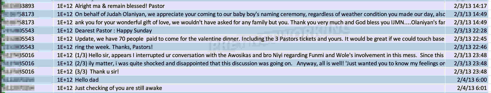
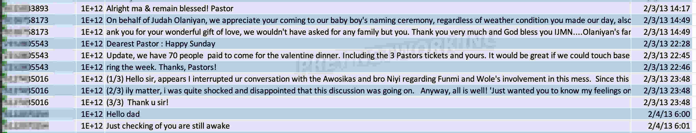